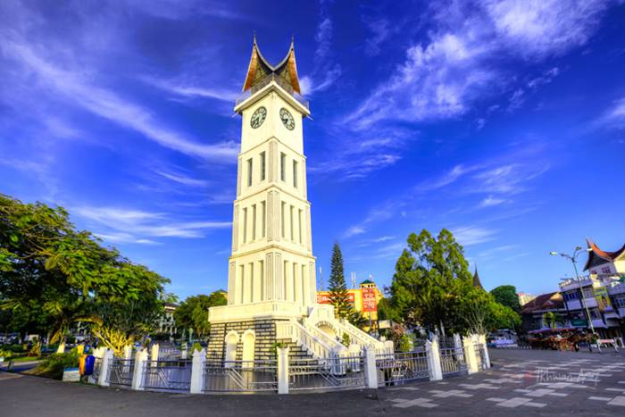

Sejarah
Padang, ibu kota Provinsi Sumatera Barat, memiliki sejarah panjang yang mencakup pengaruh dari berbagai budaya, termasuk budaya Minangkabau yang khas. Kota ini merupakan pusat perdagangan penting pada masa lalu, dan sejak abad ke-17, wilayah ini telah dikenal sebagai pusat kebudayaan Minangkabau. Minangkabau memiliki sistem adat yang unik, dengan rumah adat dan warisan budaya yang kaya.
Geografis

Padang terletak di pantai barat Pulau Sumatera dan memiliki pemandangan alam yang menakjubkan. Wilayah ini dikelilingi oleh pegunungan dan memiliki pantai yang indah di sepanjang Pantai Padang. Gunung Merapi, salah satu gunung berapi aktif di Indonesia, terletak tidak jauh dari kota ini. Padang juga memiliki iklim tropis dengan musim hujan dan musim kemarau yang khas.
Wisata
Ngarai Sianok

Terletak dekat dengan Bukit Tinggi, Ngarai Sianok adalah jurang yang indah dengan hutan hujan tropis yang hijau. Ini adalah tempat yang bagus untuk trekking dan menikmati alam.
Pantai Pasir Jambak

pantai yang indah di dekat kota Padang. Anda bisa bersantai, berenang, atau menikmati matahari terbenam yang spektakuler.
Kuliner
Rendang
hidangan daging sapi khas Indonesia, dengan bumbu kaya, rasa pedas, dan santan kelapa.
Nasi Kapau

hidangan nasi khas Minangkabau dengan beragam lauk pauk, termasuk rendang, ayam goreng, dan bumbu kaya serta pedas.